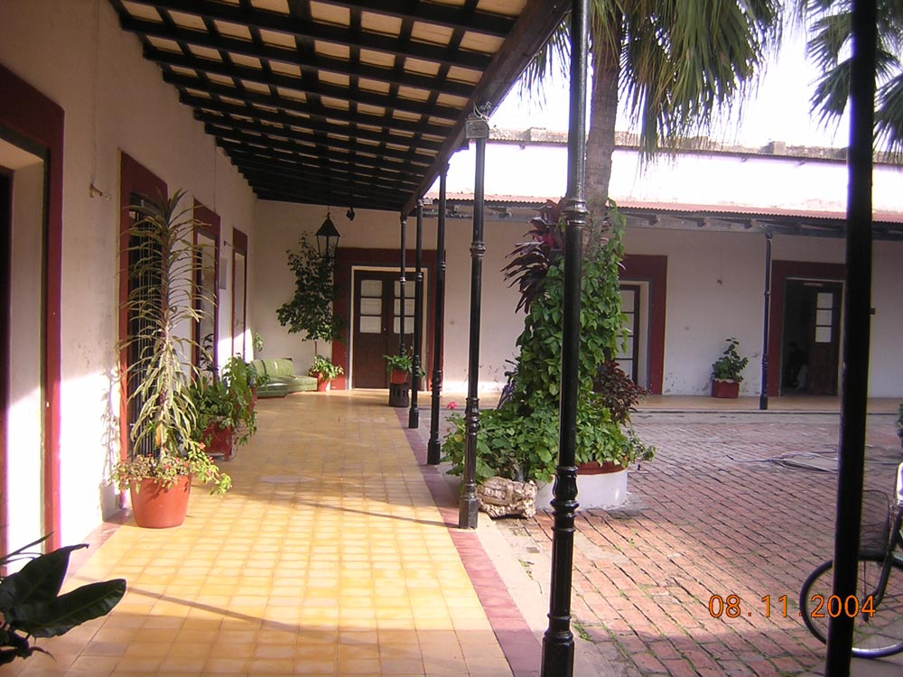
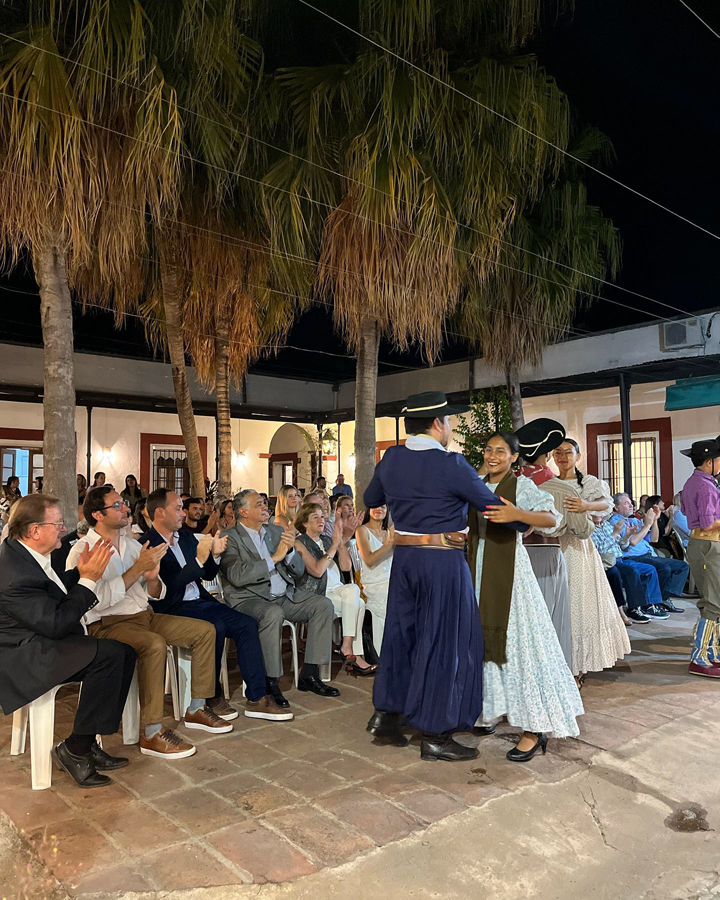

Aniversario de la Casa de la Cultura

En relación al aniversario de la Casa de la Cultura, a los 30 años de la conformación de ese lugar histórico de la ciudad como sede y ámbito de las actividades culturales y lugar a partir de allí, natural para la Dirección de Cultura, la profesora María Margarita Fogantini detalló cada aspecto para el logro de ese cometido.
"Fuimos continuadores de un Proyecto impulsado desde hace mucho tiempo", aseguró Margarita Fogantini. A la labor y proceso cultural de la Casona calificó como "Cosecheros del Sembrador".
Bibliografía: https://www.goya.gob.ar/?q=content/casa-la-cultura
Repaso histórico de la conformación de la Casa y Dirección de Cultura
Por encargo de Don Gregorio Araujo , el constructor y también primer prefecto político de la ciudad , Don Pablo Fernández , levantó esta casa , de estilo postcolonial o de transición en 1845 , recibiendo en pago una estancia ubicada en el departamento de Goya . Su propietario , Gregorio Araujo , fue un hombre importante llegando a ejercer la presidencia dela legislatura de la provincia.
Esta casa fue un importante centro de reuniones políticas y sociales donde concurría gente de diversos lugares de la Confederación Argentina . Don Gregorio , leal a sus inclinaciones federales , fue objetivo de una enemistad personal con el General Justo de Urquiza y , una mañana , estando en la iglesia , llegaron los soldados de Juan Antonio Virasoro cumpliendo órdenes del General lo tomaron prisionero y lo trasladaron a Restauración ( hoy , Paso de los Libres ) y lo fusilaron.
Actualmente este edificio funciona la Casa de la Cultura y el Archivo Histórico de Goya.
Es una de las casas más antiguas de la ciudad , donde aún se conserva su estilo original , su piso original y su patio interno con grandes macetas y las típicas palmeras caranday del litoral argentino . Con los años pasó a ser una escuela , a fines del año 1992 fue donada a la municipalidad de Goya y ahora es la Casa de la Cultura y Archivo Histórico Municipal.
Con respecto a su arquitectura cabe destacar su estilo italianizante , con un patio central rodeado de galerías y el acceso a las diversas habitaciones . Todas las habitaciones dan al patio central donde se aprecian ejemplares de vegetación autóctona y desde la puerta principal - con una reja bien trabajada- se accede a la escalera que lleva al primer piso . Sus techos poseen tirantes de madera y algunos de sus muros fueron hechos con adobe , parte de lo cual se recuperó en su restauración . Se desarrollan actividades musicales y de artes plásticas , realizan sus ensayos el Ballet Folklórico y el Ballet Contemporáneo.
Visitar esta casa es conocer una importante herencia de la ciudad de Goya , al llegar a la Casa de la Cultura puede consultar en las oficinas para que les den una introducción a los detalles del edificio.


Margarita Fogantini, explicó: "Una vez en Concordia leí una frase atribuida a Francisco de Sales 'El Cosechero nunca se olvida del sembrador'; es quien esparce semillas para la generación de las plantas y el cosechero recoge los frutos de la tierra, existen en todas las actividades humanas, siempre hay antecedentes que después se concretan en un momento determinado.
Tendríamos que remontarnos al año 1964, cuando se origina la idea de un Museo Regional en la ciudad, en épocas del Intendente Antonio Villarreal; relacionado a la historia, la filatelia, ciencias naturales, unos pocos años después se aprueba la adquisición de esa casa (J.E. Martínez y 9 de julio), en el año 1982 durante la Intendencia de Víctor Juan Antonio 'Pacho' Balestra, se compra el inmueble, propiedad de Gregorio Araujo, toda la planta baja, la planta alta, según la arquitecta Ángela Sánchez Negrette, estudiosa de la arquitectura correntina eso fue un agregado a fines del siglo XIX o principios del XX, por eso la ubicación de la esclarea."
Este es un video increíble que muestra algunas características impresionantes.
Desde Dirección de Cultura les comparten algunas de las actividades que ofrecemos y compartimos con la comunidad Goyana..
Crédito del video: Instagram
Bibliografía: https://www.goya.gob.ar/?q=content/casa-la-cultura
Adquisición del inmueble
La Profesora Fogantini, agregó: "En noviembre de 1982, Director de Cultura Luis Horacio Carbone, que ha gestionado para la compra, se concreta la adquisición del Lote 3; 2 lotes 1 y 2 sobre la línea de la calle Tucumán, y una más sobre Juan Esteban Martínez, el zaguán la mitad del jardín, las habitaciones que cierran el lado este, el lado sur, el norte conformaban ese lote adquirido por la Municipalidad."
Bibliografía: https://www.goya.gob.ar/?q=content/casa-la-cultura
Dirección de Cultura: una construcción colectiva

En 1991, en la intendencia de Daniel Avalos, me convoca a la Dirección de Cultura y es cuando se decide instalar en 1992, la Dirección con la apertura de la casa permitió el acercamiento de las personas y los vecinos en un gesto y actitud de solidaridad entregaban elementos, muebles en carácter de donación o préstamos para el uso y la empresa Massalin Particulares ante la solicitud hecha a Hugo Maidana, gerente, mobiliarios para la oficina, otros que traían mesa, máquina de escribir y así se pobló esa casa, algo que la Sociedad Goyana reclamaba la habilitación definitiva, es allí que podemos ser los continuadores de un proyecto asumido desde hace tiempo."
Bibliografía: https://www.goya.gob.ar/?q=content/casa-la-culturaGratitud a la Sociedad Goyana
En la parte final de esta reseña, que supo nombrar y reconocer a todas las gestiones siguientes, la profesora María Margarita Fogantini destacó el trabajo de los agentes municipales, del corralón que han puesto su dedicación, su fidelidad al trabajo, a las entidades, a las asociaciones, a las empresas, a los periodistas, a los medios de comunicación por la ayuda y a los: "que no están porque son importantes para mí, eternamente agradecida."
Bibliografía: https://www.goya.gob.ar/?q=content/casa-la-cultura
Información de contacto
Dirección: BYM, Juan E. Martínez 698, W3450 Goya, Corrientes
Teléfono: 03777 43-2693
Provincia: Corrientes
Facebook: Visítanos en Facebook
Instagram: Síguenos en Instagram
Enlace a la ubicación: https://goo.gl/maps/C9eDuMyTkdDnKHxD7
Explora Tour Virtual 360º
👐 Bienvenidos al Primer Tour Virtual 360º 🪐 de Goya 🎬📱🖥
🏚 Casa de la Cultura 🏤
Esta casona de dos plantas, donde hoy...
Publicado por Secretaría de Turismo Goya en Sábado, 26 de septiembre de 2020